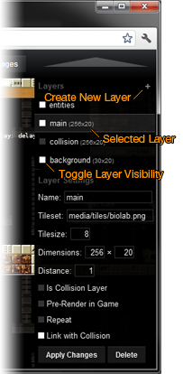

Generated: 2013-04-01
This article will teach you the basics of the Weltmeister Level Editor. Note that there's also a video tutorial available.
If your web server is configured correctly, you should be able to point your browser to http://localhost/impact/weltmeister.html where /impact/ is of course the directory in which you extracted Impact.
When Weltmeister has loaded you are presented with a new, empty level. If it doesn't load, check your JavaScript error console and make sure PHP works fine on your server.
You can change these controls in your lib/weltmeister/config.js file.
 You will see that even in your empty map one layer is present: the entities layer. All entities for your level are placed here. This layer is always there; it cannot be deleted.
When you click on the + icon, a new layer will be created and selected. You can select layers by clicking on them in the menu, or pressing the corresponding number key on your keyboard.
The visibility of a layer can be toggled by clicking on the box in front of the layer's name, or by shift-pressing the corresponding number key. This visibility is only respected in the editor - it won't have any effect on your game (if you use the default .loadLevel() method that is).
You will see the Layer Settings menu for the selected layer (if it is not the entity layer). Here you can change the Name and the Tileset for this layer, as well as the Tilesize and the layer's width and height in tiles.
Be careful when changing the layer's Dimensions or Tilesize: there is no undo!
The Distance of a layer determines how fast this layer scrolls relative to your games screen position. With a distance of 1, the layer scrolls synchronous to the screen. With a distance of 2 the Map scrolls with half the speed, making it appear farther in the background. This is only useful for secondary background layers. For your main layer it should always be 1.
The Repeat checkbox specifies if this layer should be drawn as a repeating "background pattern". Again, this is useful for secondary background layers.
If Link with Collision is checked, all manipulations on this layer will also be made on the collision layer. That means that every time you draw a tile on this layer the same spot on the collision layer will be made solid (tile #1). Every time you delete a tile, it will be deleted from the collision layer as well.
You can create a collision layer like every other layer and tick the Is Collision Layer checkbox. It will automatically use the collision tileset and become the collision layer for this level. This also means, that this layer will not be drawn in your game.
When a background or collision layer is selected, you can open the tile selection menu by pressing space. Select a tile by left clicking on it. After selecting a tile, simply left click to place it. Hold down shift and click+drag to select several tiles at once.
If you want to delete some tiles from the layer, press space and click anywhere outside the tile selection menu. This will select the "empty" tile. Again, just left click anywhere you want to place it.
All tile drawing operations can be undone or redone using Z or Y respectively.
When the entities layer is selected, you can place an entity by pressing space and selecting it from the menu.
This menu will list all entities that were found in the lib/game/entities/ directory (this path can be changed in your lib/weltmeister/config.js). Entity names must be in a specific format in order to be loadable in Weltmeister.
E.g. the file lib/game/entities/player.js must define an ig.Entity subclass with the name EntityPlayer. Dashes in the filename are used as an indicator for uppercase letters in the entity name. E.g. the file enemy-blob.js must define EntityEnemyBlob.
If there's a mismatch between the filename and the entity name, Weltmeister will tell you so when starting.
Entities can have some special properties that will only be used in Weltmeister. These properties all begin with _wm. See ig.Entity for details.
Entities can be dragged around by left clicking and holding them. If an entity is scalable (._wmScalable = true) you can change its size by dragging the the edges.
Entities can be deleted by pressing backspace or del. You can "clone" entities by pressing C – note that this only create a new entity of the same type, it does not copy all the original entity's properties.
When an entity is selected you will see the Entity Settings menu on the right. Some settings, like x, y, size.x and size.y will be automatically updated when you drag an entity around or change its size.
If you click on one property, the "key" (name) and its value will appear in the input boxes at the bottom. If you press enter in the Value box the value will be written to the entity.
You can add any number of settings to an entity by just entering a new key and value. E.g. if you want to set an entities name property to "myName", just enter "name" as Key and "myName" as Value and press enter. You can delete properties by specifying an empty string as the value.
You can connect two entities with each other, by giving one entity a name and the other entity a target with that name. E.g.:
EntityDoor key: name value: door1 EntityTrigger key: target.1 value: door1
An entity can have multiple targets, so you have number your targets with target.1, target.2 etc. If two entities are connected, a line will be drawn between them.

You can then use this target object of your trigger entity like this:
EntityTrigger = ig.Entity.extend({
size: {x: 16, y: 16},
target: {},
checkAgainst: ig.Entity.TYPE.BOTH,
_wmScalable: true,
_wmDrawBox: true,
_wmBoxColor: 'rgba(196, 255, 0, 0.7)',
check: function( other ) {
// Iterate over all targets
for( var t in this.target ) {
var ent = ig.game.getEntityByName( this.target[t] );
// Check if we got a "door" entity with the given name
if( ent && ent instanceof EntityDoor ) {
ent.open();
}
}
}
});
All Entity Settings will be directly written to the entity's properties, so be careful not to overwrite any properties you need, like the draw or update functions.